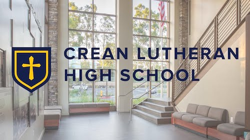
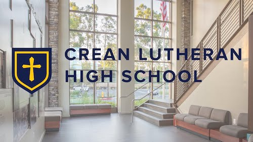

Michael Ragheb
My name is Michael Ragheb and I am currently a college university student at the University of California, Riverside. I am hoping to pursue a career as a culinary director in the near future as cooking is a passion of mine and I find it extremely important to love your work. I have been cooking from a young age and that has implanted an appreciation for food and culinary arts as I grow and continue to learn and cook more.
I believe that there is a large deal of opportunity in this field and that it has potential to spawn an environment in which the individual in the position is forced to improve, which is another pillar of a desirable job. Although my experience is limited, due to the fact that I am still only going to school at the university, I don’t have as much value on the job market as a more experienced individual. However, that does not stop me or stifle my enthusiasm for this career path.I think that it is important to be willing to learn and be able to accept that not everything is going to come easily for a new career, even if it is one that you desire. It is because of this that I have adopted the philosophy that patience is one of they keys to success in any remark. Along with this, I have also come to accept and acknowledge that the idea of expecting the acquisition of new skills to come easily is flawed in a number of ways. This includes that it inadvertently undermines the idea that experience is the key to improvement and that hard work yields beneficial and exponentially improving results. It is by this that it is necessary to have patience, and to have a willingness to not be put down by the mistakes you make as they are a key and crucial part of the learning experience. It is necessary to fail in order to improve, because without failure, a person will never know what to avoid doing.
As an employee, I am hard working, dedicated to the bettering of my field and career, willing to not take the easy road, and always up to the challenges that may lie ahead. All in all, I am an individual who is passionate about my field and is dedicated to ensuring that I become as knowledgeable and well versed in it as I possibly can. I am open for constructive criticism, as I realize I will not be perfect, but I will strive to come as close to it as I can. Regardless of whether I am or am not chosen for the position, I will be unfaltering in my dedication to pursuing it. I fully intend to pursue this as a career and look forward to whatever the future holds, whether it be in the culinary field or another one similar to it, I am excited for the incoming opportunities and the opportunities that I will come across.
Experience
Student Council Member
• Was a part of the technology commision
• Led meetings for multiple events
• Experience with leadership, compatability, and team-focused dynamics
Hospital Volunteer
• Responsible for helping staff with patients and making sure their needs were met
• Communicated and worked with cafeteria staff to ensure each patient would get what they wanted to eat
Teaching Assistant
• Assisted instructors with teaching students
• Created and formated student assignments for learning
• Helped students gain a deeper understanding of material at their own pace
• TA'd for 3 different classes in mathematical and scientific curriculum
Education
UC Riverside
Portfolio




